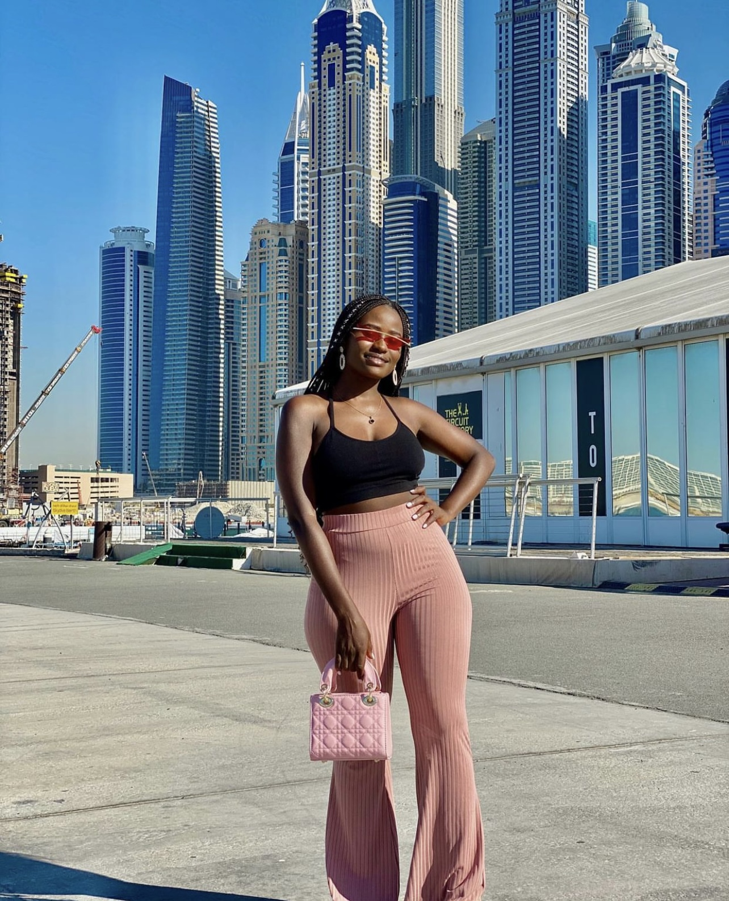
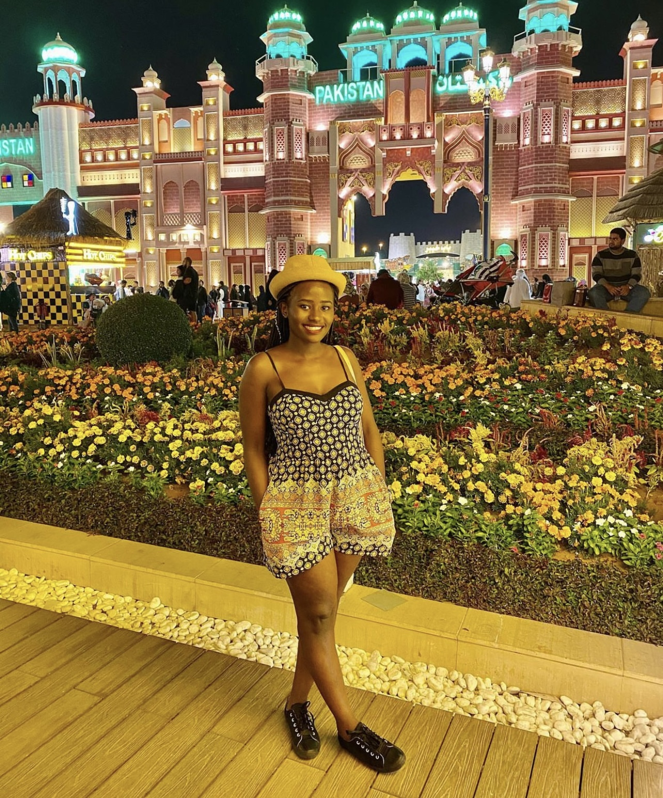
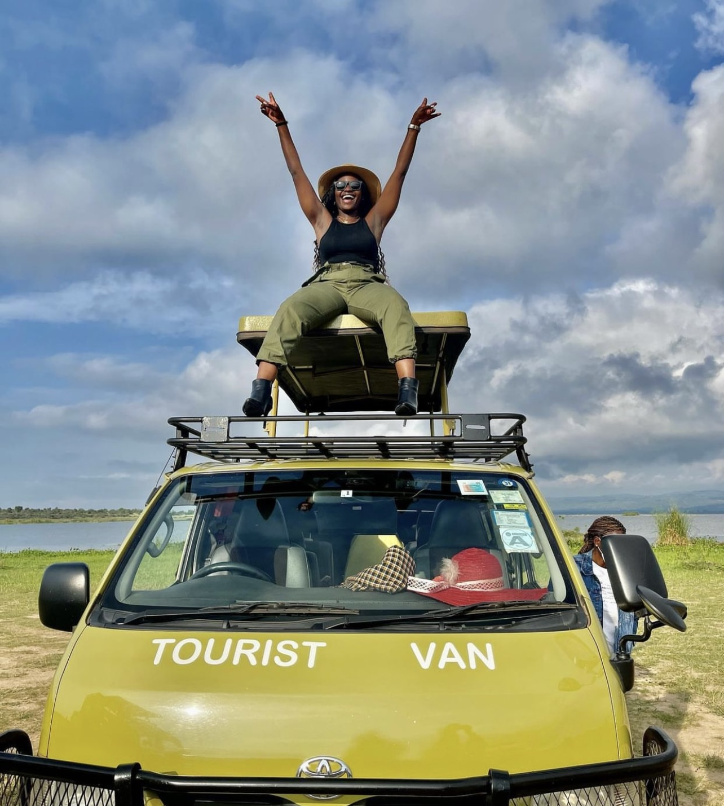
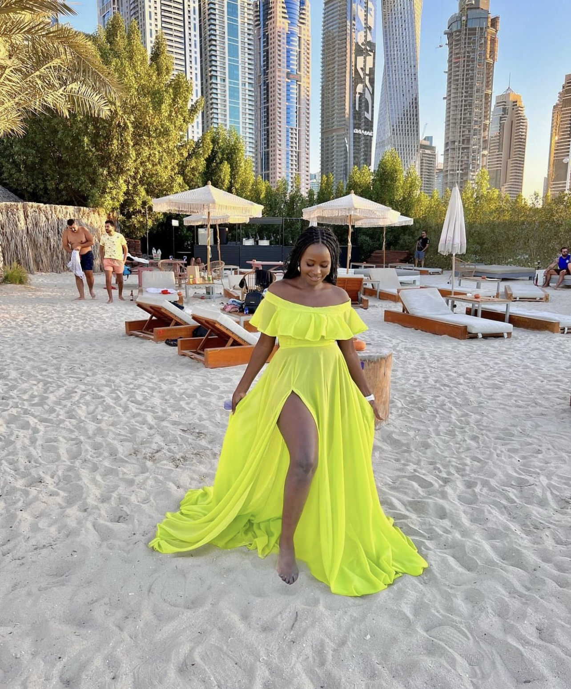
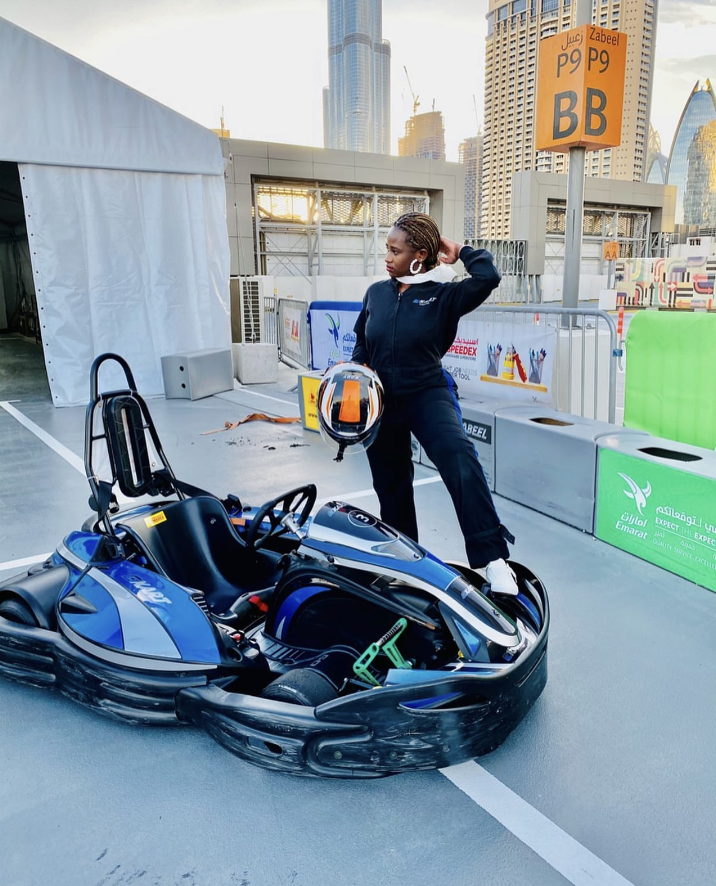

My name is Marilyn Stephanie Namukasa but you can call me Steph. I was born 20th February, 1994 making me a PISCES ♓ and i am 28 years of age. I think of myself as an alpha female having been a first born daughter, i had to play co parent roles at a very tender age. I am God fearing lady, very ambitious and at the same time a certified hodophile. I am all about women empowerment and thats why i picked interest at first site in the Educating the girl Child program #Codequeen #cohort7
WHAT DO I DO CURRENTLY FOR A LIVING
Enthusiastic Monitoring and Evaluation Specialist currently working with the Ministry of Agriculture, Animal Industry and Fisheries with over 5 years of experience; adept at using various tools, techniques, and software (SAS, SPSS, STATA, GIS, ODK, STDM, KOBO Collect) to collect and analyse data and write progress, activity, and other kinds of reports to gain an understanding of the impact of development programs and projects to ensure that they are achieving desired outcomes, provide feedback for improvement and inform future decisions and efforts. Recognized for having advanced knowledge and understanding of monitoring, evaluation and learning especially identifying areas outperforming expectations.
HOBBIES
Traveling (certified hodophile), just collecting stamps and experincing different cultures 🇺🇬 🇺🇸 🇨🇦 🇦🇪 🇰🇪 🇹🇿 🇨🇳 🇿🇦 🇸🇪 🇫🇷 🇳🇱 🇹🇭
A foodie, Anything food am in for tasting and reviewing
Photography
Music and Tv Shows
Adrenaline junkie
    
WHY DID I PICK INTEREST IN COHORT 7
I picked interest into the code queen program because i wanna add the skills attained onto my proffesion and grow my career. Secondly i have recently developed interest into a stem career and i was looking for a way to break into tech without a science, math or engineering background and oooppps Twitter was my life saver i landed on the Code Queens hash tag and immediately checked out the Educating the girl child program and this was the right opportunity for me to learn programming skills. Thank you so much for the opportunity